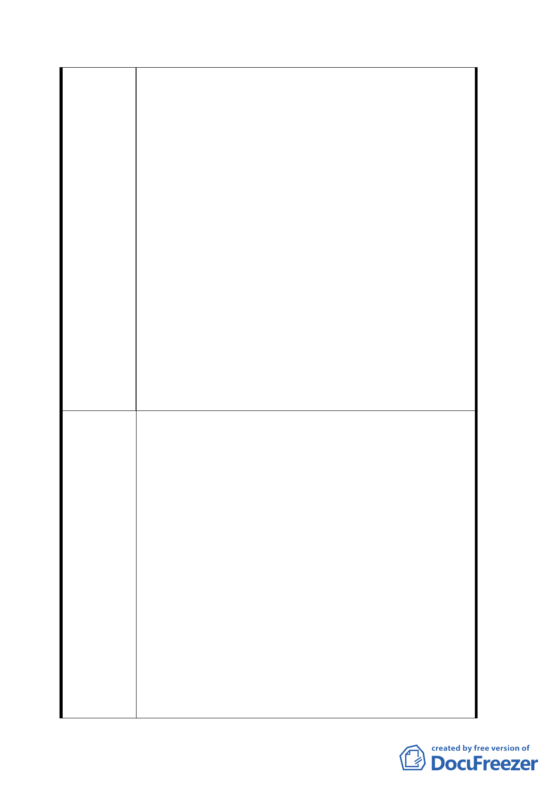

3. 91 年 3 月初旬，本人曾為此事赴都發局要求處
理，但該管公務員迄今不了了之。
六、「台北醫學院綜合大樓門診中心暨校園整體規劃新建
程」都市設計審議案：北醫係以欺瞞手段，獲得免辦
環境影響評估釋示（詳行政院環境保護署 88.6.17＜88
＞環署綜字第 0037735 號函及北醫綜合大樓完工現
況）。又：
(一) 北醫行政大樓建築物違規使用有害公共安全：案經
陳明雄 90.6.26 具函檢舉後，該管公務員迄未積極
整飭後續。且：陳明雄 90.6.26 具函檢舉 迄今，該
大樓違規使用、危害公共安全之程度：一直有增無
減。
(二) 「學校周圍，牆面線應退縮三、六四公尺距離」係
台北市政府 61.10.17 府工二字第５１５３７號公
告所明定：但北醫行政大樓、計畫道路邊圍牆、及
計畫道路邊雜項工作物等…均不符規定。
(三) 吳興街 260 巷北側路邊之「北醫醫療廢棄物儲存
所、垃圾場、及機踏車棚架」配置，均屬右述三、
六四公尺淨空範圍內：且醫療廢棄物及垃圾場易滋
生病媒，嚴重損害雙和里地區環境衛生。
一、吳興街 260 巷及 284 巷地區（下稱雙和里地區）之居
住及交通品質，飽受「北醫校園阻斷計畫道路、校舍
任意擴充規模」之干擾而惡化：建議擴大本案，成為
修訂台北市信義區「原陸軍保養廠用地暨南側雙和里
地區」細部計畫案：免遭非議。
二、敦促北醫：捐出吳興街 260 巷南側三興段二小段 526
之 5 地號（即北醫第二停車場基地），充作公共設施用
地：以符社會公理。
三、全面打通北醫校園內之都市計畫道路。
建 議 辦 法 四、就 88.7.28 聯宜國際工程顧問有限公司依法報請核備
之「台北醫學院校園整體規劃都市設計審議報告書」：
重新審查北醫第三醫療大樓相關建築執照（即 92 雜字
第 59 號雜項執照、93 建字第 170 號建造執照）。另：
(一) 依法審核「北醫舊有校舍『化學、醫藥、生物、有
害性或高能量之實驗室設備』環境影響評估」：以確
保北醫師生、病患、病患家屬及本社區居民之公共
安全。
(二) 依法拆除北醫周圍「應留出淨空三、六四公尺距離」
四